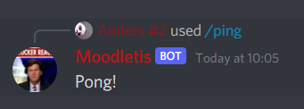
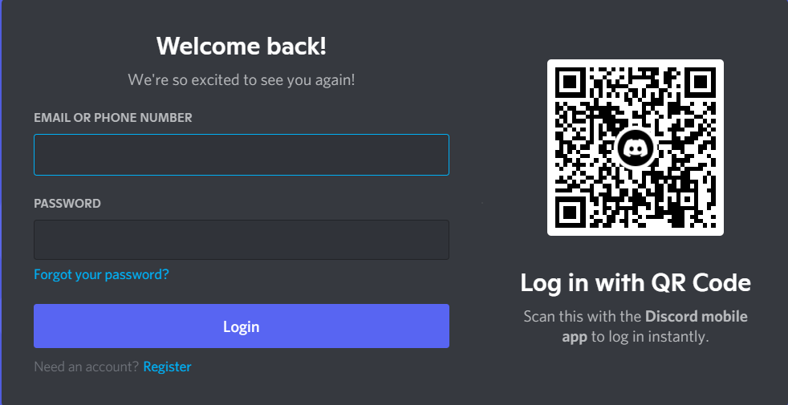
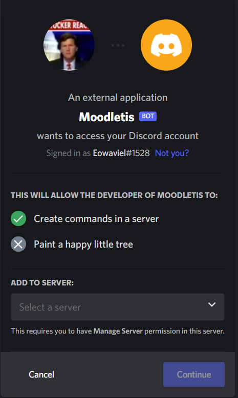

Hvad gør botten?
Boodle er blevet lavet for at gøre det simplere at få fat i den information
du skal bruge fra Moodle. Hovedsageligt benyttes den til at få
kursusmaterialet på discord istedet for på Moodle,
da mange allerede har discord åben i baggrunden. A picture that shows what
it can do, is seen below.

For at finde botten og få den ind på den ønskede server skal der blot trykes
på dette link
Herefter skal der blot logges ind på discord Hvor der så fremkommer et
popup, og der kan ved brug af en drop down menu vælges hvilken server den
skal tilføjes.

Hvis ovenstående billede forekommer, så bare log ind, hvorefter du, kan gå
til næste trin, hvis du allerede er logget ind kan du blot gå videre til
næste trin
Når du så har logget ind vil der komme et popup der ser ud som på
nedenståemnde billede, her kan der benyttes den drop down menu der er, til
at bestemme hvilken server du vil have botten tilkoblet.
